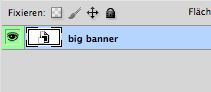
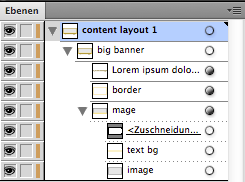

Things For Cuties - HTML version
Version 2.0
- created: 01/09/2013
- latest update: 11/24/2014
- by: MouseOnLeaf
- themeforest.net/user/MouseOnLeaf
- email: sebastiansievert@googlemail.com
Thank you for purchasing my template! If you have any questions that are beyond the scope of this help file, please feel free to email me by using the form on my profile page.
Introduction
"Things for cuties" is a beatyfull and load speed and SEO optimized HTML template, perfect suitable for any babies, children and kids eCommerce website, selling candy, toys, clothing or fashion at their online shop. This HTML e-commerce template is part of a package. Matching full PSD template (including more banners), stationery (including logo), newsletter templates, fully working OpenCart version and a Zen Cart version are available at themeforest and graphicriver.
With your purchase of this OpenCart child theme you will support the children's charity UNICEF. I donate 15% of every sale.
Features summarized
- highly load speed and SEO optimized code - the whole demo start page loads in less than 3 seconds on a normal broadband / DSL connection!
- High resolution / ready for retina displays
- Well thought-out and really useful responsive design
- Based on our very own mobile-first (OpenCart) Framework, including fixed top menu, snap-out menu's left / right, responsive lightbox and a lot more
- Build with mobile-first and usability in mind
- Runs additionally as your customers favorite web app on mobiles / tablets
- A useful custom footer including twitter, contact & facebook and extended contact page including google map and social links
- Cloud Zoom and a responsive Lightbox used on product detail pages
- Matching corporate design available, including logo, business cards and stationery in printable CMYK format
- Matching email newsletter templates available
- works well with left or right sideboxes or in single column mode
- 17 layered PSD files included
This is only a HTML version of "things for cuties". It has no cart, contact or other functions included. If you need a fully working e-commerce website, you have to go further with this template and include it in your favorite eCommerce software or you have to purchase the open cart / zencart version.
What's inside?
Included in this package you will find the following:
- 17 PSD files
-
17 HTML files and its images / js / css
- about.html - usefull for all kind of informations
- addressbook - account addressbook
- blog-details.html - for blog or news pages
- blog.html - for blog or news pages
- brands.html - show your store brands
- category.html - product lists
- checkout.html - the checkout page
- comparison.html - for your product compare
- contact.html - contacts page
- gifts.html - gift purchase page
- index.html - the home page
- myaccount.html - the account main page
- orderhistory.hrml - account order history page
- product.html - a product details page
- shoppingcart.html - the shopping cart page
- specials.html - special offers page
- wishlist.html - the account wishlist page
- template documentation
Working with the PSD files
You can use the included elements PSDs (e.g. "product_box.psd" etc.), if you wanna change graphical elements for your page, but most of it are styled with CSS instead. If you like to change the whole design / layout, best way is to work directly with the PSD version of "things for cuties" - available here. At this point you definitly need more experience with Photoshop, Illustrator and HTML and I think, you do not need any help from my side... :)
So lets just change the image inside the "slider". Follow these easy steps:
- Open the "slider.psd" in Photoshop.
-
As you can see at the layers window, there are only two layers inside. This is because the banner is a vector smart object, built in Illustrator. So double-click on the layer "big banner" now.

- The banner will open up at Illustrator now. Open the layers window now.
- Open the layers group "content layout 1" -> "big banner" -> "image".
-
Inside this group you find the layer "image", which is just a gray rectangle.

- Place your favorite image now by using the Menu ("File" -> "Place").
- Move it inside the group "image".
- Resize it to fit inside the box.
- Delete the grey rectangle "image".
- You probably wanna change the text, so just use the type tool and do it.
- Save the vector smart object.
- Switch back to Photoshop.
- Use the menu "File" -> "Save for web and devices" at Photoshop.
- Save it as "png24" with transparency under a unique name inside the "images"-folder
- Now you have to change the slider image inside the html file.
How to use it
Because this is only a simple and static HTML version of "things for cuties", it has no cart, contact or other functions included. If you need a fully working e-commerce website, you have to go further with this template and you need to code it in PHP / include it in your favorite shop software, e.g. "Open Cart" or "Magento".
Beyond that, you can purchase the fully working OpenCart version and a Zen Cart version of this template.
Credits and Sources
I've used the following images on the demo page (they are not included in this package):
- Summer baby shoes by olinchuk
- toy train by pzaxe
- toy car by K13art
- Baby leather coat with fur isolated on white by gsermek
- Baby Girl Toddler in Car Seat by rognar
- Child short isolated by TpaBMa
- Rocking toy by Coprid
- sleeping newborn © Dalia Drulia, found on fotolia (#17650535)
- young family © Svetlana Fedoseeva, found on fotolia (#24946512)
- happy family © LanaK, found on fotolia (#28085001)
I've used the following open source jquery modules:
- Cloud Zoom V1.0.2.5, (c) 2010 by R Cecco - http://www.professorcloud.com
- hoverIntent r7 - http://cherne.net/brian/resources/jquery.hoverIntent.html
- jQuery selectBox, Copyright 2012 Cory LaViska for A Beautiful Site, LLC. -https://github.com/claviska/jquery-selectBox
- Snap.js, Copyright 2013, Jacob Kelley - http://jakiestfu.com/
- jQuery Superfish Menu Plugin, Copyright (c) 2013 Joel Birch
- jQuery FlexSlider, Copyright 2012 WooThemes, Contributing Author: Tyler Smith
- Colorbox, jQuery lightbox and modal window plugin, (c) 2014 Jack Moore - http://www.jacklmoore.com/colorbox
- Add to Homescreen, (c) 2014 Matteo Spinelli
- Apprise, 2012 by Daniel Raftery - http://labs.bigroomstudios.com/libraries/Apprise-v2
For help, license and more informations about it, please refer to the code of the files!
Support & Help
If you have any questions that are beyond the scope of this documentation, just drop me a line on sebastiansievert@googlemail.com. Please do not use the comments section of the item on themeforest for your support questions! Thanks!
Rate it please!
Thanks again for purchasing my template! If you like it, please don't forget to rate it! Go to themeforest and login, open "download" in your menu on top right, search for my template and give it five stars!


Updates / Changelog
-
Version 2.0 - 24.November 2014
- completely rewritten, huge improvements and extensions, it's now based on our all new mobile-first (OpenCart-) framework and we have improved the overall usability, look and feel, design, code and load speed
-
Version 1.2.2 - July 2013
- Added support for the new twitter API
- Improved Facebook “Likebox”
-
Version 1.2.1 - 26 February 2013
- Fixed a display problem on google chrome browser at OSX
- Fixed some issues with the facebook like box, caused by internal facebook changes…
-
Version 1.2 - 22 February 2013
- completely rewritten CSS and HTML files – now much smaller and better structured
- added 8 more pages, including some account pages
- Less and better organized jquery / js files
- Some more, smaller improvements
-
Version 1.1.1 - 30 January 2013
- fixed a bug in firefox, caused ugly white block on top of some pages
-
Version 1.1 - 21 January 2013
- removed some unused css definitions in all css files
- improved mobile version – better product box display
- included some more general css style definitions
- some minor bug fixes
-
Version 1.0 - 17 January 2013
- Initial release